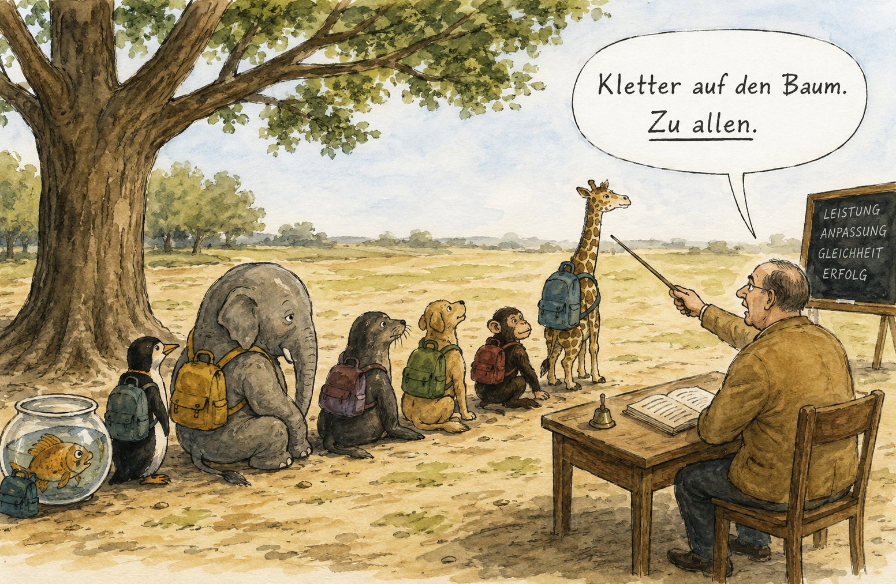
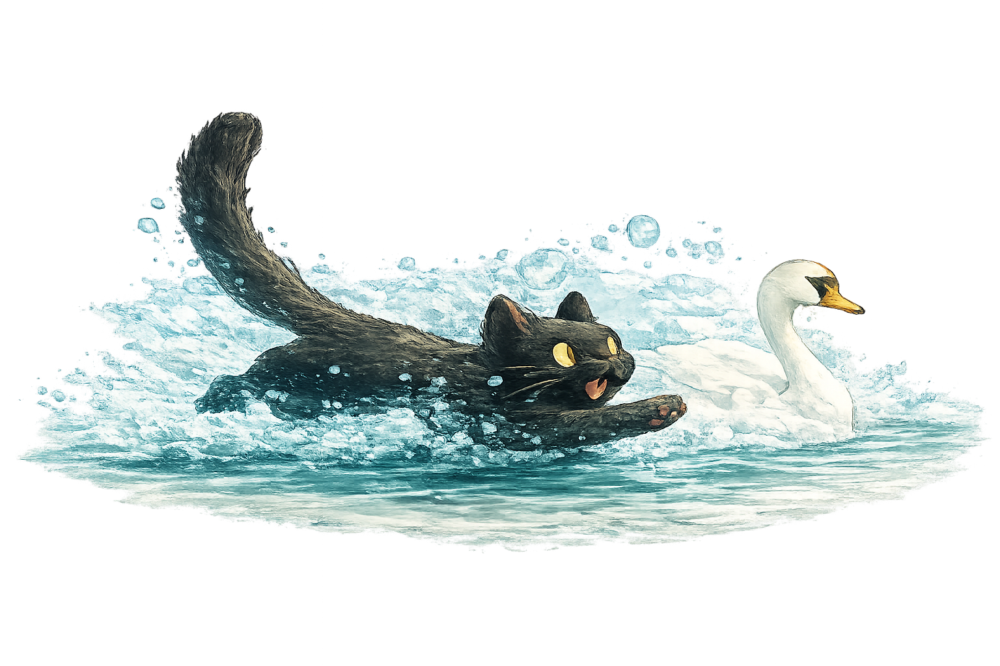

Möglichkeiten
Fische, Füchse und die Frage nach der Normalität
Wie unterschiedlich dürfen Menschen sein, ohne als Defizit gelesen zu werden?
Light up Reader
Nicht jede bestehende Ordnung ist alternativlos. Manchmal öffnet eine Frage bereits einen neuen Weg.

Texte in diesem Raum

Möglichkeiten
Wie unterschiedlich dürfen Menschen sein, ohne als Defizit gelesen zu werden?
Möglichkeiten
Über Prozesse, die Zeit, Raum und Vertrauen brauchen.
Möglichkeiten
Über Elternschaft, Bindung und die Grenzen gesetzlicher Lösungen
Möglichkeiten
Warum Wahrheit allein nicht entscheidet
Möglichkeiten
Menschen unterscheiden sich in vielerlei Hinsicht. Sie haben unterschiedliche Begabungen, Bedürfnisse, Wahrnehmungen und Lebensrhythmen. Während manche morgens voller Energie sind, werden andere erst am Abend produktiv. Einige suchen die Gesellschaft vieler Menschen, andere benötigen Rückzug und Ruhe, um denken zu können.
Diese Vielfalt erscheint uns selbstverständlich – zumindest solange sie sich innerhalb bestimmter Grenzen bewegt.
Interessant wird es dort, wo Unterschiede auf gesellschaftliche Erwartungen treffen.
Schule, Ausbildung, Arbeitswelt und viele andere Institutionen benötigen gemeinsame Regeln. Sie schaffen Orientierung, Vergleichbarkeit und Verlässlichkeit. Gleichzeitig entstehen dadurch Vorstellungen davon, was als normal, angemessen oder leistungsfähig gilt.
Doch nach welchen Kriterien werden diese Maßstäbe eigentlich festgelegt?
Ein Fisch ist nicht schlechter als ein Eichhörnchen, weil er keinen Baum erklimmen kann. Ein Fuchs ist nicht ungeeignet, weil er nicht unter Wasser lebt. Ihre Fähigkeiten entfalten sich lediglich unter unterschiedlichen Bedingungen.
Auch bei Menschen stellt sich die Frage, ob manche Schwierigkeiten tatsächlich Defizite darstellen – oder ob sie teilweise aus der Passung zwischen Individuum und Umgebung entstehen.
Wann sprechen wir von einer Schwäche?
Wann von einer Besonderheit?
Wann von einer Krankheit?
Und welche Möglichkeiten geraten aus dem Blick, wenn Unterschiede ausschließlich unter dem Gesichtspunkt der Anpassung betrachtet werden?
Vielleicht liegt die Herausforderung moderner Gesellschaften nicht darin, Unterschiede zu beseitigen. Vielleicht besteht sie darin, Wege zu finden, mit ihnen zu leben, ohne dabei den Zusammenhalt zu verlieren.
Die Frage lautet dann nicht, wie alle Menschen gleich werden können.
Sondern wie unterschiedlich Menschen sein dürfen.
Möglichkeiten
Wer sein Bild von Geburt hauptsächlich aus Filmen und Fernsehserien bezieht, könnte leicht den Eindruck gewinnen, dass es sich dabei vor allem um einen medizinischen Ausnahmezustand handelt. Hektische Fahrten ins Krankenhaus, schreiende Frauen, dramatische Komplikationen und Eingriffe in letzter Minute gehören zu den wiederkehrenden Bildern unserer Kultur.
Dabei stellt sich eine interessante Frage:
Wie stark prägen diese Bilder unsere Erwartungen an Geburt?
Viele Erfahrungsberichte zeichnen ein anderes Bild. Dort ist weniger von Hektik die Rede als von Warten. Weniger von Kontrolle als von Aufmerksamkeit. Weniger von Anweisungen als von einem Prozess, der seinen eigenen Rhythmus entwickelt.
Manche Frauen berichten, dass die Geburt überraschend still verlief. Nicht das Schreien stand im Mittelpunkt, sondern Konzentration. Nicht das Gefühl, etwas aktiv tun zu müssen, sondern die Erfahrung, dass der Körper bereits wusste, was zu tun war.
Interessanterweise unterscheiden sich auch die Vorstellungen darüber, wie eine Geburt auszusehen hat. Während Frauen in Filmen häufig liegend in Krankenhausbetten dargestellt werden, haben Menschen über Jahrtausende hinweg in unterschiedlichsten Positionen geboren: hockend, kniend, stehend oder im Vierfüßlerstand. Viele dieser Haltungen nutzen die Schwerkraft, statt ihr entgegenzuwirken.
Die Frage lautet deshalb vielleicht nicht, welche Geburtsposition die richtige ist. Die Frage lautet vielmehr:
Unter welchen Bedingungen kann ein Körper seinem eigenen Rhythmus folgen?
Natürlich können bei einer Geburt Komplikationen auftreten. Medizinische Hilfe kann lebensrettend sein. Moderne Geburtshilfe hat dazu beigetragen, Risiken für Mütter und Kinder zu verringern und bietet vielen Familien ein hohes Maß an Sicherheit.
Doch neben der Frage nach medizinischer Sicherheit existiert noch eine zweite Frage:
Wie entsteht Vertrauen?
Vertrauen in den eigenen Körper.
Vertrauen in die eigene Wahrnehmung.
Vertrauen in die Fähigkeit, einen natürlichen Prozess zu begleiten, ohne ihn ständig steuern zu müssen.
Vielleicht berührt die Diskussion über Geburt deshalb ein größeres Thema.
Denn auch jenseits von Schwangerschaft und Geburt begegnen wir immer wieder der Vorstellung, dass alles kontrolliert, überwacht und optimiert werden müsse. Gleichzeitig gibt es Prozesse, die sich nur begrenzt planen oder beschleunigen lassen.
Nicht alles wächst schneller, wenn man daran zieht.
Nicht alles funktioniert besser, wenn man ständig eingreift.
Manches benötigt vor allem eines:
Zeit, Raum und seinen eigenen Rhythmus.
Die Frage nach dem Geburtsort setzt allerdings voraus, dass Frauen tatsächlich wählen können. Wer zwischen einer Geburt im Krankenhaus, einem Geburtshaus oder einer Hausgeburt entscheiden möchte, ist auf qualifizierte Begleitung angewiesen. Hebammen spielen dabei eine zentrale Rolle. Sie verbinden fachliche Kompetenz mit individueller Betreuung und schaffen überhaupt erst die Voraussetzungen dafür, dass unterschiedliche Wege offenstehen. Wo diese Begleitung fehlt, wird die Frage nach der Wahlfreiheit schnell theoretisch.
Vielleicht lautet die eigentliche Frage daher nicht, wo ein Kind geboren werden sollte.
Vielleicht lautet sie:
Wie gehen wir mit Prozessen um, die sich nicht vollständig kontrollieren lassen?
Und wie viel Vertrauen sind wir bereit, ihnen entgegenzubringen?
Möglichkeiten
Über Elternschaft, Bindung und die Grenzen gesetzlicher Lösungen
In den letzten Jahrzehnten hat sich das Familienrecht deutlich verändert. Lange Zeit hatten unverheiratete Väter vergleichsweise wenige Möglichkeiten, ihre Rolle im Leben ihrer Kinder rechtlich geltend zu machen. Die Reformen der vergangenen Jahre verfolgten deshalb ein nachvollziehbares Ziel: Väter sollten stärker einbezogen werden und Kinder die Möglichkeit haben, zu beiden Elternteilen Kontakt zu halten.
Auf den ersten Blick erscheint dieser Gedanke überzeugend.
Doch wie so oft wird es komplizierter, sobald allgemeine Regeln auf individuelle Lebensrealitäten treffen.
Viele familienrechtliche Regelungen beruhen auf einer stillschweigenden Annahme: Eltern können trotz einer Trennung langfristig miteinander kooperieren. Häufig gelingt das auch. Viele getrennte Eltern schaffen es, ihre Konflikte zurückzustellen und gemeinsam Verantwortung für ihre Kinder zu übernehmen.
Aber was geschieht in den Fällen, in denen genau diese Voraussetzung nicht erfüllt ist?
Was passiert, wenn Vertrauen verloren gegangen ist, Kommunikation scheitert und jeder Kontakt neue Konflikte hervorbringt? Wenn zwei Menschen nicht nur kein Paar mehr sind, sondern bereits vor der Geburt oder kurz danach feststellen mussten, dass eine tragfähige Zusammenarbeit nicht möglich ist?
Die Antwort des Gesetzes fällt häufig erstaunlich eindeutig aus. Biologische Elternschaft soll möglichst auch soziale Elternschaft werden. Die dahinterstehende Idee ist nachvollziehbar: Wer ein Kind gezeugt hat, soll Verantwortung übernehmen können und nicht ohne Weiteres aus dem Leben des Kindes verschwinden.
Doch Verantwortung, Bindung und Vertrauen folgen nicht immer denselben Regeln.
Unterhalt kann verpflichtend sein.
Verträge können verpflichtend sein.
Steuern können verpflichtend sein.
Aber können Nähe, Vertrauen und Kooperation ebenfalls verpflichtend werden?
Die Frage wird besonders dort sichtbar, wo Menschen sich bewusst gegen bestimmte rechtliche Wege entscheiden und dafür erhebliche Nachteile in Kauf nehmen. Manchmal verzichten Elternteile auf finanzielle Unterstützung oder staatliche Leistungen, weil sie befürchten, dass die damit verbundenen rechtlichen Verflechtungen langfristig mehr Konflikte schaffen als lösen.
Für Außenstehende mag das irrational erscheinen. Warum sollte jemand freiwillig auf Unterstützung verzichten?
Vielleicht weil manche Konflikte einen Preis haben, der sich nicht in Euro berechnen lässt.
Denn gemeinsame Elternschaft bedeutet weit mehr als die Anerkennung biologischer Abstammung. Sie bedeutet Kommunikation, Abstimmung und langfristige Zusammenarbeit. Sie betrifft Fragen des Wohnortes, der Schule, medizinischer Entscheidungen und vieler weiterer Bereiche des täglichen Lebens.
Je harmonischer die Beziehung zwischen den Eltern ist, desto leichter lassen sich solche Fragen lösen.
Doch je stärker die Konflikte werden, desto schwieriger wird die Situation – nicht nur für die Erwachsenen, sondern auch für die Kinder.
Gerade deshalb lohnt sich eine Frage, die in vielen Debatten erstaunlich selten gestellt wird:
Ist das Kindeswohl immer automatisch dadurch gefördert, dass möglichst viele rechtliche Bindungen zwischen den Eltern bestehen?
Oder gibt es Situationen, in denen weniger Zwang und mehr Freiwilligkeit zu stabileren Verhältnissen führen könnten?
Diese Frage richtet sich nicht gegen Väter.
Sie richtet sich auch nicht gegen Verantwortung.
Sie richtet sich an eine Gesellschaft, die versucht, sehr unterschiedliche Lebensrealitäten mit allgemeinen Regeln zu ordnen.
Denn Familien entstehen nicht allein durch Gene.
Sie entstehen durch Beziehungen.
Und Beziehungen folgen oft einer anderen Logik als Gesetze.
Möglichkeiten
Warum Wahrheit allein nicht entscheidet
Wir sprechen häufig darüber, was wahr ist.
Vielleicht stellen wir jedoch eine andere, mindestens ebenso wichtige Frage viel zu selten.
Warum werden manche Wahrheiten gesellschaftlich sichtbar – und andere nicht?
Diese Frage richtet sich nicht gegen Wissenschaft.
Nicht gegen Institutionen.
Nicht gegen Medien.
Sie richtet sich auf einen grundlegenderen Mechanismus.
Denn zwischen Wahrheit und gesellschaftlicher Wirklichkeit liegt ein weiterer Prozess.
Der Prozess ihrer Sichtbarkeit.
Wir alle tragen zur Konstruktion gesellschaftlicher Wirklichkeit bei.
Nicht weil wir die Welt erschaffen.
Sondern weil wir ständig entscheiden,
welche Beobachtungen wir ernst nehmen,
welche Begriffe wir verwenden,
welche Erzählungen wir wiederholen,
welche Erfahrungen wir teilen
und welche wir übergehen.
Wirklichkeit entsteht deshalb nicht nur durch Tatsachen.
Sie entsteht auch durch Aufmerksamkeit.
Durch Sprache.
Durch Deutung.
Durch gemeinsame Orientierung.
Das ist zunächst weder gut noch schlecht.
Jede Gesellschaft konstruiert auf diese Weise ihre gemeinsame Wirklichkeit.
Problematisch wird es erst,
wenn diese Konstruktionsprozesse selbst unsichtbar werden.
Wenn Interpretationen nicht mehr als Interpretationen erscheinen,
sondern als die einzig denkbare Wirklichkeit.
Vielleicht konkurrieren dabei unterschiedliche Selektionsmechanismen miteinander.
Ein Denkmodell kann sich verbreiten,
weil es Beobachtungen besonders gut erklärt.
Es kann sich aber auch verbreiten,
weil es leicht verständlich ist,
emotionale Resonanz erzeugt,
institutionell gestützt wird,
wirtschaftliche Vorteile bietet
oder durch Macht und Autorität verstärkt wird.
Dominanz und Wahrheitsnähe sind deshalb nicht notwendigerweise identisch.
Das bedeutet nicht,
dass Wahrheit bedeutungslos wäre.
Im Gegenteil.
Vielleicht besitzt sie lediglich schlechtere Startbedingungen.
Denn Wahrheit arbeitet häufig langsam.
Sie verlangt Beobachtung.
Korrektur.
Widerspruch.
Geduld.
Macht dagegen wirkt oft sofort.
Autorität wirkt sofort.
Ökonomische Anreize wirken sofort.
Aufmerksamkeit wirkt sofort.
Vielleicht erklärt genau das ein merkwürdiges historisches Muster.
Viele Menschen,
die wir heute als Vordenker würdigen,
galten zu ihrer eigenen Zeit als Außenseiter,
als Irrende,
als Störenfriede
oder wurden schlicht übergangen.
Die Geschichte erinnert sich häufig an ihre Erkenntnisse.
Ihre Gegenwart erinnerte sich zunächst an ihre Abweichung.
Das bedeutet selbstverständlich nicht,
dass jede Minderheitenposition später Recht behält.
Aber es zeigt etwas anderes.
Gesellschaftliche Anerkennung und Wahrheitsgehalt verlaufen häufig nicht synchron.
Rückblickend erscheinen viele Reformen selbstverständlich.
Heute sprechen wir von notwendigen Veränderungen,
von Lernprozessen,
von Reformen,
von historischen Irrtümern.
Doch in dem Moment,
in dem Menschen versuchen,
solche Irrtümer sichtbar zu machen,
stoßen sie nicht selten auf erheblichen Widerstand.
Vielleicht liegt darin eines der großen Paradoxe menschlicher Gesellschaften.
Wir feiern Korrekturen häufig erst,
wenn sie keine Korrekturen mehr verlangen.
Deshalb stellt sich vielleicht eine neue erkenntnistheoretische Frage.
Nicht nur:
Was ist wahr?
Sondern:
Unter welchen Bedingungen erhält Wahrheit überhaupt eine faire Chance, gesellschaftlich sichtbar zu werden?
Denn wenn Denkmodelle nicht allein nach ihrer Erklärungskraft ausgewählt werden,
sondern zugleich nach Aufmerksamkeit,
Macht,
Profit,
Autorität
oder sozialer Anschlussfähigkeit,
dann genügt Wahrheit allein möglicherweise nicht.
Dann entscheidet auch die Selektionsumwelt darüber,
welche Wirklichkeit eine Gesellschaft schließlich für selbstverständlich hält.
Vielleicht besteht die eigentliche Aufgabe einer offenen Gesellschaft deshalb nicht darin,
jede neue Behauptung sofort zu akzeptieren.
Sondern Bedingungen zu schaffen,
unter denen unterschiedliche Rekonstruktionen geprüft,
korrigiert
und miteinander verglichen werden können.
Nicht,
weil jede Perspektive gleichermaßen wahr wäre.
Sondern weil Wahrheit nur dort eine reale Chance besitzt,
wo ihre Konkurrenz nicht bereits vor ihrer Prüfung verschwindet.